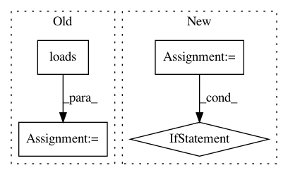

5cfa1934e4a2157d07ef534e1033a3f0e5bc1082,python/ray/experimental/client/server/server.py,RayletServicer,WaitObject,#RayletServicer#Any#Any#,112
Before Change
return objectref
def WaitObject(self, request, context=None) -> ray_client_pb2.WaitResponse:
object_refs = [cloudpickle.loads(o) for o in request.object_handles]
num_returns = request.num_returns
timeout = request.timeout
object_refs_ids = []
for object_ref in object_refs:
if object_ref.binary() not in self.object_refs:
return ray_client_pb2.WaitResponse(valid=False)
object_refs_ids.append(self.object_refs[object_ref.binary()])
try:
ready_object_refs, remaining_object_refs = ray.wait(
object_refs_ids,
num_returns=num_returns,
After Change
def WaitObject(self, request, context=None) -> ray_client_pb2.WaitResponse:
object_refs = []
for id in request.object_ids:
if id not in self.object_refs[request.client_id]:
raise Exception(
"Asking for a ref not associated with this client: %s" %
str(id))
object_refs.append(self.object_refs[request.client_id][id])
num_returns = request.num_returns
timeout = request.timeout
try:
ready_object_refs, remaining_object_refs = ray.wait(
In pattern: SUPERPATTERN
Frequency: 5
Non-data size: 4
Instances
Project Name: ray-project/ray
Commit Name: 5cfa1934e4a2157d07ef534e1033a3f0e5bc1082
Time: 2020-12-18
Author: me@barakmich.com
File Name: python/ray/experimental/client/server/server.py
Class Name: RayletServicer
Method Name: WaitObject
Project Name: ray-project/ray
Commit Name: 91f630f70959098facef4ab4e1a98d1f48f9a586
Time: 2020-04-28
Author: shawn.ck.yang@gmail.com
File Name: streaming/python/runtime/task.py
Class Name: InputStreamTask
Method Name: run
Project Name: streamlit/streamlit
Commit Name: bd163732d8c83ad9c643f319d648cccf6dbc185b
Time: 2018-06-18
Author: adrien.g.treuille@gmail.com
File Name: lib/streamlit/proxy/ClientWebSocket.py
Class Name: ClientWebSocket
Method Name: on_message
Project Name: NervanaSystems/nlp-architect
Commit Name: 24d3656c6c4b3c6806954487720d53af775a1150
Time: 2018-06-07
Author: shira.guskin@intel.com
File Name: set_expansion_demo/ui/main.py
Class Name:
Method Name: get_phrases
Project Name: AKSHAYUBHAT/DeepVideoAnalytics
Commit Name: a5660329907136fbacc4729a6f9cafed871f06b3
Time: 2018-03-31
Author: akshayubhat@gmail.com
File Name: server/init_fs.py
Class Name:
Method Name: